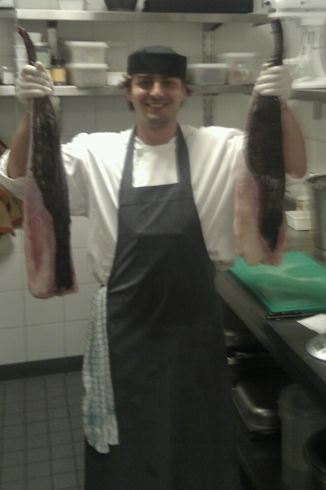
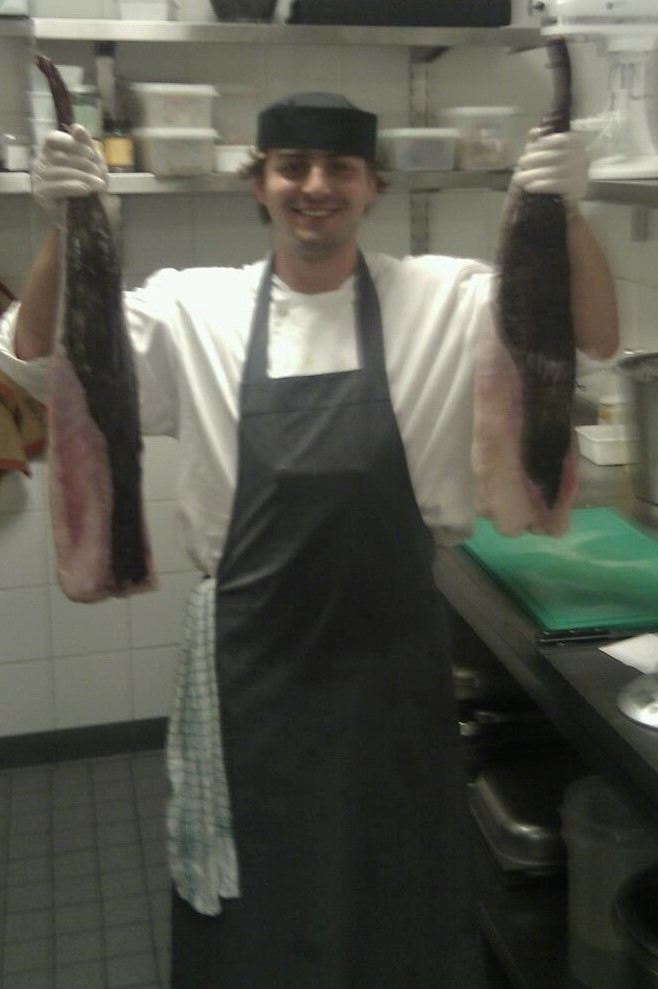

About Me
 

Hello, my name is Felipe Angel and I dedicate my self to cooking as my career choice. My love for cooking came from my family and from some of my favorite memories of them, I am half Colombian half Italian, so you would understand from both sides of those cultures, family is very important.
My mother side is Italian, so every time we went over to my Grandmothers house there was always food on the table or something would be made, my grand mother would be last to sit down or even at times eat standing up jut to make sure every one had what they wanted and eat enough, or more than enough because there was always an abundance of food.
My father is Colombian, and what I remember a lot is the many BBQ we prepared together the day before or 2 days before, we always ended up preparing more than we have to because we tended to eat while making things, so had to make more always.
I have been working as a cook since 2018 when I moved here to The Netherlands, since then I have worked in several places, and learned a lot from different people, also I gained a mentor in the cooking industry which has helped me push to the level I am in and trying to go higher.
The places I have worked have been, The Royal Theater Carré Netherlands, Victoria Hotel, Hotel Okura, One Micheline star restaurant Bridges, Sheraton Schiphol, Double Tree by Hilton and Park Inn by Radisson.
The recipes I will be placing her eon the site are ones that I learned a long the years, some of this recipe I have changed a little bit for my own taste, but also let me remind you that in the kitchen you can always change the recipe if it fits your taste.
The only part of the kitchen that needs to be exact is pastry, since the end result will be different if something is change and the recipe is not modified based on what you added or took away.
I hope you enjoy the recipes like I have until now, and if you are looking for a recipe and is not here please contact me and I will get back at you as soon as possible.